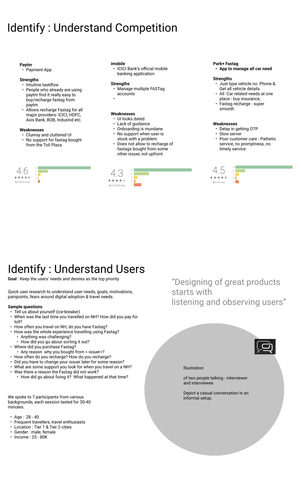
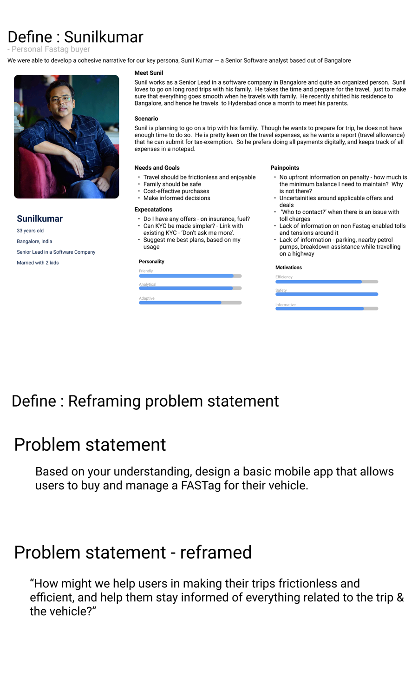
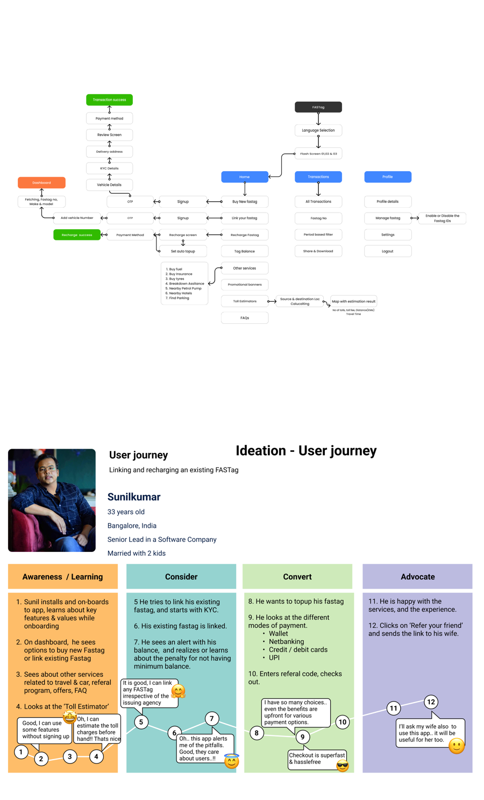
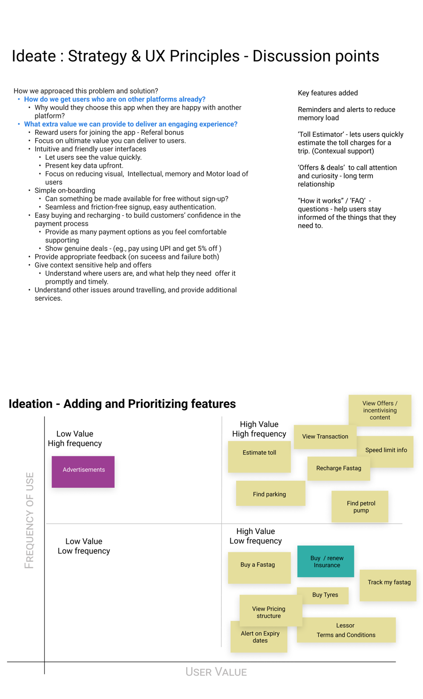
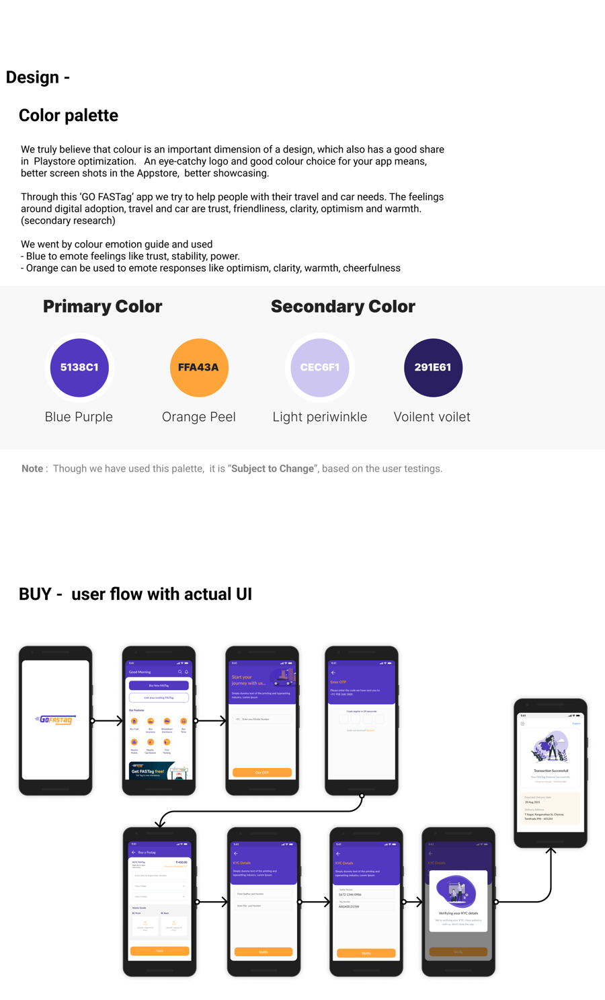
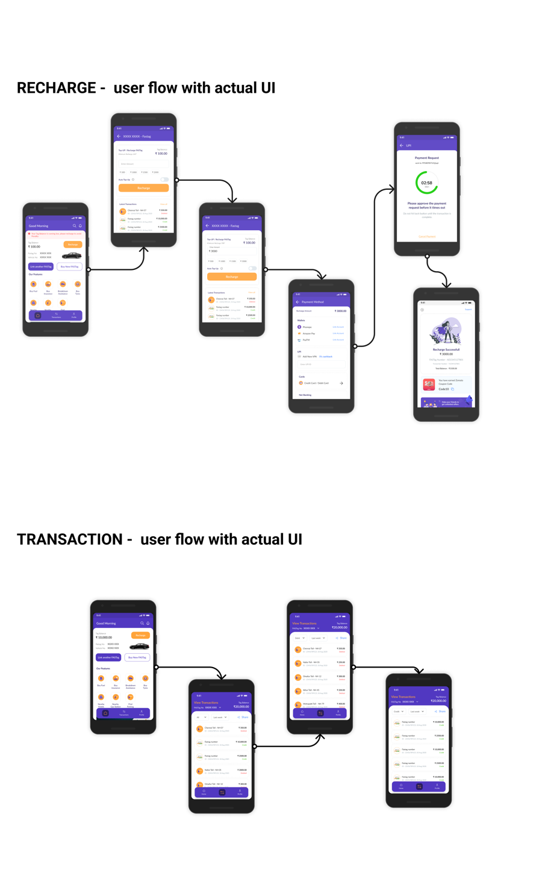
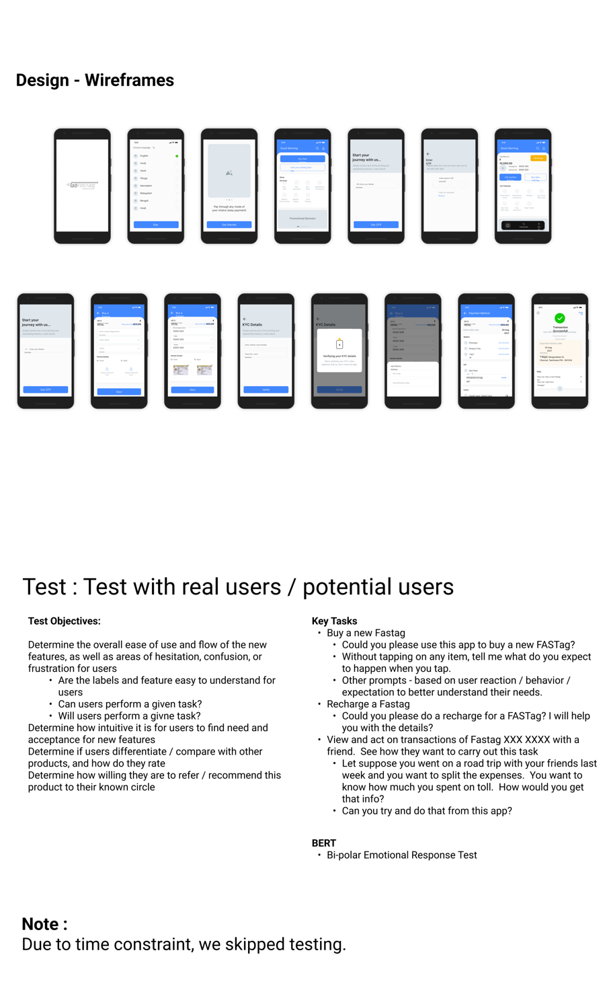
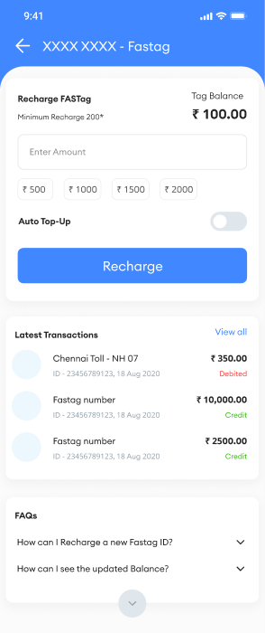

Designing GO FASTag
A time-boxed design assignment for Kotak — the full trace, including the usability test that was planned properly and never got run.

This was a design assignment M2P's team took on for Kotak — a specific, bounded brief: design a basic mobile app that lets someone buy and manage a FASTag for their vehicle.
Nobody owns the FASTag experience end to end
Mapping the ecosystem before assuming the gap
The assumption to check: that FASTag apps fail at features. Mapping the ecosystem first suggested otherwise — NETC issues the tag officially, but users encounter it through banks, standalone apps, and payment wallets, each covering a slice, none covering the whole trip.
Competitor teardown plus seven real interviews
"There seems to be no app that comprehensively addresses all the needs — car and travel — of a highway traveller." · "Users are still not aware of many things around Fastag."
- Paytm — easy recharge for existing users, but cluttered, no support for tags bought elsewhere.
- ICICI iMobile — could manage multiple tags, but dated UI, no support path when something breaks.
- Park+ FasTag — covered more car-related needs in one place, but OTP delays and poor customer care.

Seven participants, ages 28–40, frequent highway travellers from Tier 1 and Tier 2 cities: most weren't sure how much to recharge and just topped up a random amount, several were confused about why KYC couldn't be done through Aadhaar, and almost nobody could explain how they'd track a transaction after the fact.
Reframing "buy and manage a FASTag" around the actual trip
Clustering the confusion
- Recharge uncertainty — most topped up a random amount.
- KYC confusion — unclear why Aadhaar doesn't cover it.
- No trip context — no way to estimate tolls before a trip.
- No transaction history — can't check past charges by trip/date.
Reconstructed from the documented research themes
Says (reconstructed)
- "There's no app that addresses all my needs."
- "I'm not aware of many things around Fastag."
Thinks
- Assumes recharge amount doesn't matter much, so guesses.
- Believes KYC should be simpler given Aadhaar already exists.
Does
- Buys from a bank app specifically to skip KYC friction.
- Tops up in round numbers without checking actual toll costs.
Feels
- Mildly anxious before a long trip about running out of balance.
- Indifferent to the app itself — it's a means to an end.
Sunilkumar — grounded in the interviews
Sunilkumar, a senior lead at a software company in Bangalore, married with two kids, plans road trips with his family and wants to prepare everything — including tolls — in advance rather than deal with surprises mid-trip.


From transaction to trip
- Symptom: confusion about recharge amount, KYC, and past transactions.
- Problem: FASTag apps treat the tag as the product, not the trip it's meant to support.
- Root cause: every existing app was built around the transaction (buy, recharge) rather than the traveller's actual planning need.
The reframe's direct consequence
Recharge uncertainty → need to know costs ahead of time → opportunity: estimate tolls before recharging → solution: the Toll Estimator, detailed next.
One feature answered a question no competitor asked
Five ideas, one genuinely novel
- Toll Estimator — estimate toll charges for an upcoming trip, answering a need none of the three competitors addressed.
- Reminders and alerts — reduce memory load for balance and renewal.
- Simple onboarding — frictionless first-time sign-up.
- Flexible, transparent payments — deals surfaced upfront (UPI, 5% off), not buried.
- Context-sensitive help — FAQ content placed where confusion actually happens.
Alternative considered and rejected: a generic rewards program mirroring Paytm's model. Rejected because the research pointed at planning anxiety, not reward-seeking behaviour — a rewards layer would have addressed a problem participants didn't actually have.
Value versus frequency, applied honestly
Estimating tolls, recharging, viewing transactions, and speed-limit info ranked high-value and high-frequency — the core of the app. Buying a FASTag, insurance, and tracking ranked high-value but lower-frequency.

Building GO FASTag around Sunilkumar's actual trip
Trip-first, not transaction-first navigation
Top-level navigation surfaced the Toll Estimator, Recharge, and Transaction history — the highest-value, highest-frequency items — rather than defaulting to a generic account-first structure.
Buy flow, entry to confirmation

What's preserved: final wireframes, not the exploration
Colour chosen deliberately, freedom or not
The brief explicitly freed the design from Kotak's visual identity, so colour was chosen deliberately: a blue-purple primary to signal trust and stability, and an orange-peel secondary to carry optimism, clarity, and cheerfulness — both noted honestly as subject to change based on user testing, not treated as final the moment they looked good.
Recharge and transaction history got the same direct treatment the research called for: recharge in as few steps as the payment method allows, and a transaction view organized so a trip's toll history is actually findable afterward.

The test plan existed. The time to run it didn't.
A real, unrun plan — stated plainly
Objectives: ease of use, whether labels and features were understandable, whether users could and would complete key tasks, and how the app compared to what people already used. Key tasks: buying a new FASTag without prompting, recharging with clear expectations set up front, and reviewing a shared transaction with a friend to see how naturally someone could explain their own spending. A BERT (bipolar emotional response) test was planned to capture how the experience felt, not just whether it worked.

None — by project constraint, not oversight
What's real, and what's still a hypothesis
| Metric | Result |
|---|---|
| Task completion / time on task | Not measured — test not run |
| Colour palette validation | Not validated with users |
| Toll Estimator — competitor coverage | Confirmed: 0 of 3 competitors offer it |
What's real: a fully reasoned design with a documented rationale at every decision point. What's not: any evidence it actually works for a user, because the one step that would prove that was the step time ran out on.
Future Scope · Prototype · Key Learnings
Future Scope
- Run the usability test plan that was already written — buy, recharge, and shared-transaction tasks — before treating any screen as final.
- Validate the colour palette against real users rather than emotional theory alone.
- Extend the Toll Estimator with real-time route data.
Prototype
The recharge screen, at source resolution — minimum recharge threshold, preset amounts, an Auto Top-Up toggle, and transaction history surfaced right below it, matching what the research called for.

Key Learnings
A fragmented ecosystem is the actual competitor
Paytm, iMobile, and Park+ weren't bad products. None of them owned the whole trip, and that gap was the opportunity.
Reframe around the goal, not the object
"Manage a FASTag" and "stay informed about your trip" point to different apps, even though they cover the same screens.
Creative freedom still needs a rationale
No brand constraint meant more responsibility to justify colour, not less.
Say what you didn't get to test
A real project has real constraints. Naming the one that mattered here is more useful than pretending it didn't exist.
The through-line: the best idea in this project — the Toll Estimator — didn't come from studying FASTag apps. It came from asking what Sunilkumar actually needed on the morning of his trip.